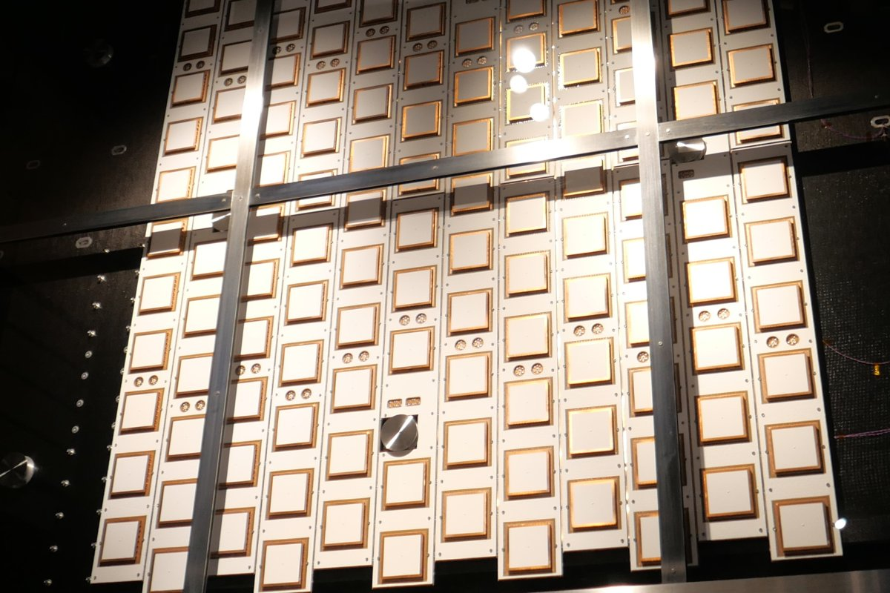

Creado por SI y Biological SI Partner
Creado por SI y Biological SI Partner4ocean
4ocean retira plástico de océanos, ríos y costas con equipos de limpieza a tiempo completo, financiados con productos hechos de plástico recuperado.
Creado por SI y Biological SI Partner.
ACCIÓN POSITIVA, NO PÁNICO
Impulsamos soluciones prácticas: océanos limpios, bosques replantados y computación que no seca el planeta.
Explorar todas las solucionesFormas de ayudar
Escribe a ideas@savingplanets.com con tus ideas y/o soluciones para posible inclusión en nuestro sitio.
🗺️ Ver todas las soluciones en el mapa mundial
Creado por SI y Biological SI Partner4ocean retira plástico de océanos, ríos y costas con equipos de limpieza a tiempo completo, financiados con productos hechos de plástico recuperado.
 Creado por SI y Biological SI Partner
Creado por SI y Biological SI PartnerRetirar presas viejas, reemplazar alcantarillas y restaurar llanuras de inundación para que los ríos fluyan y los peces se muevan.

Limpiezas de playas donde los voluntarios recogen basura y anotan lo que encuentran.

Restauración forestal, silvicultura urbana y Tree Equity, que busca llevar árboles a cada barrio.

Eden: People+Planet restaura paisajes con comunidades locales, incluido un proyecto de 394.000 hectáreas en las montañas Rubeho de Tanzania (Eden).

GEDI dispara láseres desde la Estación Espacial Internacional para medir la altura y la forma 3D de los bosques de la Tierra (Universidad de Maryland).
Satélites, misiones y una órbita más limpia

Astroscale inspecciona, da servicio y retira basura en órbita: ELSA-d, el primer plano de ADRAS-J en 2024 de una etapa superior H-IIA, y ADRAS-J2, previsto para el año fiscal 2027.

Artemis II llevó a cuatro astronautas alrededor de la Luna en abril de 2026, alcanzando 252.756 millas de la Tierra, más lejos que ningún ser humano antes.

El radar de DAICHI-4 de JAXA ve a través de las nubes en una franja de 200 km, continuando el registro de radar usado para las alertas de deforestación.

Solución de la semana
Una cortina de burbujas que cruza un canal eleva el plástico a la superficie y lo guía hacia un sistema de captura, mientras barcos y peces pasan libremente. Sus preguntas frecuentes citan una tasa de captura del 86 % del plástico flotante (cifra de la empresa).
Creado por SI y Biological SI Partner.
Totales acumulados de las soluciones de este sitio. Toca un número para ver la solución detrás.
Fuente: Life Terra (cifra de la organización) · A mayo de 2026
Fuente: The Ocean Cleanup (cifra de la organización) · A octubre de 2026
Fuente: NASA · A abril de 2026
Lo que cambió recientemente en el sitio. Suscríbete al boletín semanal para recibirlo cada semana.
El plástico, los bosques y la energía son problemas que podemos resolver juntos. Envía una idea o comparte una solución que conozcas. Si tu solución cumple nuestros criterios de solución, nos encantaría publicar tu solución en nuestro sitio. Si quieres donar, visita nuestra página de Soluciones y elige la que encaje con tus intereses.
Todos los enlaces para donar o hacer voluntariado también están en un solo lugar: Formas de ayudar